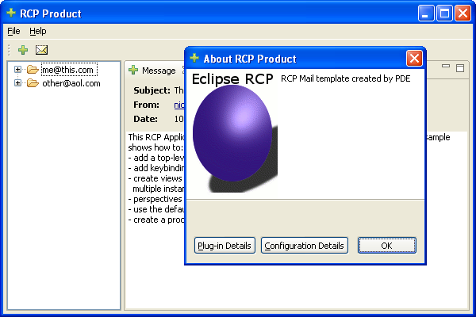
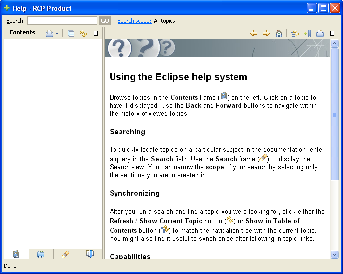
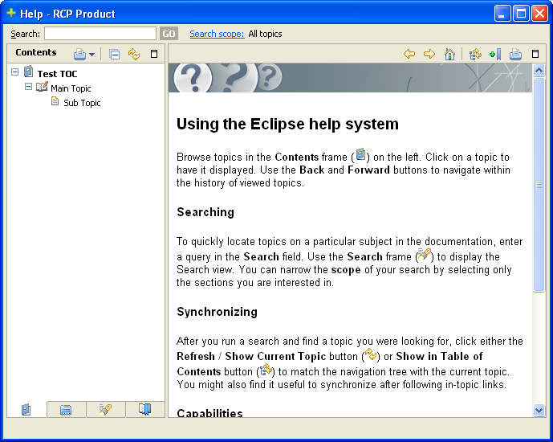
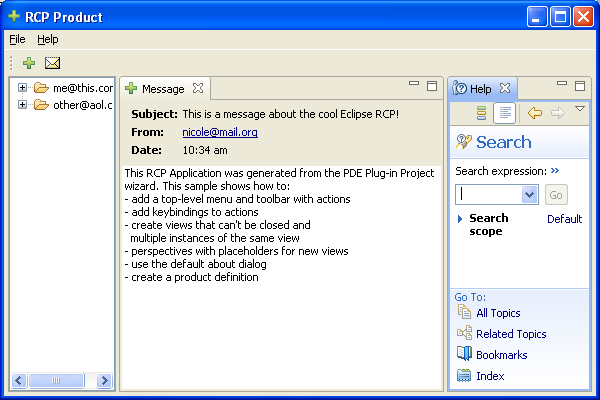

Introduction
Online help can be added to an Eclipse Rich Client Platform (RCP) application with a modest amount of effort by adding the plug-ins that comprise the Eclipse help system. The first section of this article discusses the benefits of integrating the help system into your application. This is followed by a tutorial which describes in detail the steps required to add help system support to a newly created RCP application while avoiding commonly encountered pitfalls. Finally we describe how to add context help and how to fine tune the settings of your help system.
Why include the Eclipse Help System in your Application?
Very few applications are self explanatory to the point where they require no documentation. For an RCP application the easiest way to add that documentation support is to use the Eclipse help system. The Eclipse help system is supported on all of the same platforms as Eclipse and has developed over years into a robust, feature rich and extensible component, which continues to grow in terms of both quality and features.
The Eclipse help system uses a browser-based presentation and therefore has full support for HTML. Search is automatically included in the help system; context help and keyword index are supported if you provide the appropriate content files. If you want to allow the same help pages that you provide in your application to be accessed from the Internet you can host them on an InfoCenter: a web server which serves help pages. Localization is supported so that you can provide documentation in additional languages.
The help system (since 3.3) has extension points for content producers that programmatically generate help content including a table of contents, keyword index, and content pages. This can be useful when converting documentation from some other format into HTML.
Tutorial
The next sections walk through the process of adding help support to a newly created RCP application. You may already have an RCP application but we recommend that you create a new application for this exercise. That way you can experiment on a sample before modifying your application.
Create a Rich Client Application
The Plug-in Development Environment (PDE) has some templates for creating RCP applications. For this article we will use the Mail Template as it already has some menus in place.
From the workbench select the menu item "File > New > Project..." and select the "Plug-in Project" template.
Enter "org.eclipse.helprcp" in the "Project name" field and hit "Next".
On the second screen be sure to select the "Yes" option in the "Rich Client Application" section.
And on the final screen select the "RCP Mail Template".
Hit "Finish" and your project will be created. You can test your application by opening the "Plug-in Manifest Editor" and, in the "Overview" tab, clicking on "Launch an Eclipse Application". You will see an application start which already has a "Help" menu with an "About RCP Product" submenu. Click on the "About RCP Product" submenu and this is what you will see.

Create a Product Configuration
 Adding the help
system is easiest if you have a plug-in based product configuration.
Adding the help
system is easiest if you have a plug-in based product configuration.
To create the product configuration, perform the following steps:
- Switch to the Plug-in Development perspective if you are not already there (Use the Window > Open Perspective menu option).
- Select "File > New > Product Configuration" from the main menu.
- Select "org.eclipse.helprcp" in the resulting "New Product Configuration" wizard page.
- Input "helprcp.product" into the "File name" text box.
- Select the "Use an existing product" radio button inside the "Initialize the file content" group and click "Finish". The "Product Configuration Editor" will open.
- Input "Help RCP Application" into the "Product Name" text box.
- Verify "org.eclipse.helprcp.product" is the default value in the "Product ID" drop down menu.
- Select "File > Save" from the main menu.
- From the "Overview" tab of the "Product Configuration Editor" click on "Launch an Eclipse Application" and verify that the application launches.
Add Source Code
In your rich client plug-in project you will find a class called "ApplicationActionBarAdvisor". Open this in an editor. You will make a few source changes to add the help actions to the menu. Add the lines marked "// NEW" to the class as follows:
public class ApplicationActionBarAdvisor extends ActionBarAdvisor {
// Actions - important to allocate these only in makeActions, and then use them
// in the fill methods. This ensures that the actions aren't recreated
// when fillActionBars is called with FILL_PROXY.
private IWorkbenchAction exitAction;
private IWorkbenchAction aboutAction;
private IWorkbenchAction showHelpAction; // NEW
private IWorkbenchAction searchHelpAction; // NEW
private IWorkbenchAction dynamicHelpAction; // NEW
Add the lines marked "// NEW" to function "ApplicationActionBarAdvisor.makeActions()" as follows:
protected void makeActions(final IWorkbenchWindow window) {
// Creates the actions and registers them.
// Registering is needed to ensure that key bindings work.
// The corresponding commands keybindings are defined in the plugin.xml file.
// Registering also provides automatic disposal of the actions when
// the window is closed.
exitAction = ActionFactory.QUIT.create(window);
register(exitAction);
aboutAction = ActionFactory.ABOUT.create(window);
register(aboutAction);
showHelpAction = ActionFactory.HELP_CONTENTS.create(window); // NEW
register(showHelpAction); // NEW
searchHelpAction = ActionFactory.HELP_SEARCH.create(window); // NEW
register(searchHelpAction); // NEW
dynamicHelpAction = ActionFactory.DYNAMIC_HELP.create(window); // NEW
register(dynamicHelpAction); // NEW
And add the lines marked "// NEW" to function "ApplicationActionBarAdvisor.fillMenuBar()" as follows:
protected void fillMenuBar(IMenuManager menuBar) {
MenuManager fileMenu = new MenuManager("&File", IWorkbenchActionConstants.M_FILE);
MenuManager helpMenu = new MenuManager("&Help", IWorkbenchActionConstants.M_HELP);
menuBar.add(fileMenu);
// Add a group marker indicating where action set menus will appear.
menuBar.add(new GroupMarker(IWorkbenchActionConstants.MB_ADDITIONS));
menuBar.add(helpMenu);
// File
fileMenu.add(newWindowAction);
fileMenu.add(new Separator());
fileMenu.add(messagePopupAction);
fileMenu.add(openViewAction);
fileMenu.add(new Separator());
fileMenu.add(exitAction);
// Help
helpMenu.add(aboutAction);
helpMenu.add(showHelpAction); // NEW
helpMenu.add(searchHelpAction); // NEW
helpMenu.add(dynamicHelpAction); // NEW
Test
Launch the application from the "Product Configuration Editor" and see what happens. You will notice that the help menu now has additional entries for "Help Contents" and "Search" but neither of them does anything. This is because we still need to import the plug-ins that comprise the Eclipse help system.
Add Required Plug-ins
- In the "Configuration" tab of the "Product Configuration Editor" add "org.eclipse.help.webapp" and "org.eclipse.help.ui" to the list in the "Plug-ins and Fragments" section.
- Select the checkbox to "Include optional dependencies when computing required
plug-ins".
 If you
omit this step the help system will not have all the plug-ins it needs and you
will see an exception at startup.
If you
omit this step the help system will not have all the plug-ins it needs and you
will see an exception at startup. - Click the "Add Required Plug-ins" button.
- Select "File > Save" from the main menu.
Test Again
Launch the application from the "Product Configuration Editor" again. Now "Help > Help Contents" will open a new window to display help.

Add Sample Help Content
You can create a plug-in with help content as follows:
- Select "File > New > Project > Plug-in project".
- On the first screen uncheck "Create a Java Project"
- Enter "org.eclipse.helprcp.content" in the "Project name" field and hit "Next" twice.
- From the templates page select "Plug-in with sample help content" and hit "Finish".
- In the "Product Configuration Editor" add your new plug-in to the list in the "Plug-ins and Fragments" section.
- Launch the application from the "Product Configuration Editor". It will look like this after you expand the nodes in the tree.

"Help > Search" is also enabled and looks like this. You will want to increase the size of the help view.

Add Context Help Support
In this section you will add context help to the "Message" view included in the application.
The first thing you will need to do is create a context id for the view. To do this you will need to modify the code for the "View" class in the "org.eclipse.helprcp" project. Open it in an editor and add the line marked "// NEW" to the "View.createPartControl(Composite parent)" as follows:
public void createPartControl(Composite parent) {
Composite top = new Composite(parent, SWT.NONE);
GridLayout layout = new GridLayout();
layout.marginHeight = 0;
layout.marginWidth = 0;
top.setLayout(layout);
PlatformUI.getWorkbench().getHelpSystem().setHelp(top, "org.eclipse.helprcp.message"); // NEW
After adding the code, you will have an error. To resolve it select "Source > Organize Imports" from the main menu. Save your changes when you are done.
Once the context id is created you need to create content to associate to it. We will put the content in the "org.eclipse.helprcp.content" plug-in. Add a new file to the root directory for the project called "contexts.xml". Open the new file in an editor, input the following text and save your changes:
<contexts>
<context id="message">
<description>This is the sample context-sensitive help. There is a link to the help content below.</description>
<topic href="html/subtopic.html" label="Subtopic" />
</context>
</contexts>
Next you will need to link the content to the context id. This can be done as follows:
- Open the "Plug-in Manifest Editor" for the "org.eclipse.helprcp.content" plug-in.
- Switch to the "Extensions" tab and click the "Add..." button.
- In the "New Extension" wizard select the
"org.eclipse.help.context" extension point and click "Finish".
You will need to uncheck the
"Show only extension points from the required plug-ins" checkbox to select the extension point.
- You will be asked if you want to add a dependency to the "org.eclipse.help" plug-in. Click "No".
- Right-click your new extension in the list and select "New > contexts"
- In the "file" field enter "contexts.xml".
- In the "plug-in" field enter "org.eclipse.helprcp".
- Select "File > Save" from the main menu.
The last step required to ensure that the correct context is sent to the help system is to forward focus to the view's composite when its "setFocus()" method is called. To do this you will first have to make the composite a private variable. In class "View" add the line marked "// NEW" in the code segment below and update the line marked "// MODIFIED" as indicated:
public static final String ID = "org.eclipse.helprcp.view";
private Composite top; // NEW
public void createPartControl(Composite parent) {
top = new Composite(parent, SWT.NONE); // MODIFIED
GridLayout layout = new GridLayout();
Next add content to the "View.setFocus()" method as follows:
public void setFocus() {
if(top != null) // NEW
top.setFocus(); // NEW
}
Test context help
Context-sensitive help should now be configured for the Message view. To test it, run your application again, select the view titled "Message" and choose "Help > Dynamic Help" from the main menu. When you do this, you should see the following:
Setting Help Preferences
Any eclipse based product has the option to customize the default preferences of the plug-ins it ships with. This is no different for your RCP application. To customize the help system settings you will first need to create a "plugin_customization.ini" file and reference it from your product plug-in's "plugin.xml". To setup the file, perform the following steps:
- Create a new file called "plugin_customization.ini" in the root of the "org.eclipse.helprcp" project. Leave it empty for now.
- Open the "Plug-in Manifest Editor" for the "org.eclipse.helprcp.content" plug-in.
- Switch to the "Extensions" tab and expand the "org.eclipse.core.runtime.products" node.
- Right click on "Help RCP Application (product)" and select "New > property" from the context menu.
- Enter "preferenceCustomization" in the "name" field and "plugin_customization.ini" in the "value" field.
- Select "File > Save" from the main menu.
Once the file is configured for the product, you can place name/value pairs as specified in the following help document to customize the help system:
The most common usage of this functionality is to control the order in which contributed parts of the table of contents are displayed for your product or to hide parts of the table of contents that some of your plug-ins contribute. Both of these can be done with the "HELP_DATA" property. This property references a plug-in relative path to an xml file that contains the toc ordering and hiding information. For instance, if you created "helpData.xml" in the root of your product plug-in you would put a line reading "org.eclipse.help/HELP_DATA=helpData.xml" in your "plugin_customization.ini" file. Here is a small sample of the xml file format:
<extensions> <tocOrder> <toc id="/org.eclipse.helprcp.content/testToc.xml"/> <toc id="/org.eclipse.other.content/toc.xml"/> </tocOrder> <hidden> <toc id="/org.eclipse.third.content/toc.xml"/> </hidden> </extensions>
This sample would display your table of contents from the "org.eclipse.helprcp.content" plug-in first followed by the referenced book from the "org.eclipse.other.content" plug-in. It would also hide the contents of the toc referenced from the "org.eclipse.third.content" plug-in. Note that the "org.eclipse.other.content" and "org.eclipse.third.content" plug-ins do not exist and are simply used as an example. For more information on the format of the xml file, see it's schema from the help documentation:
http://help.eclipse.org/help33/topic/org.eclipse.platform.doc.isv/guide/ua_help_setup_help_data.htm
Conclusion
This article has shown how to add the Help System and context help support to a simple RCP application, the exact steps will vary for different RCP applications but the general principles remain the same. The authors believe that this article and tutorial will be a time saver for RCP developers and we hope that you have found it useful. Feedback including suggestions for additional articles can be sent to platform-ua-dev@eclipse.org.